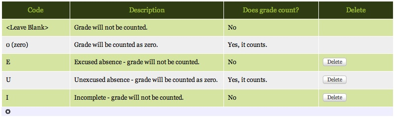
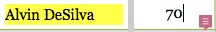
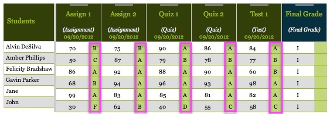
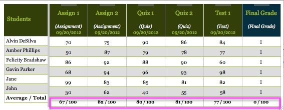
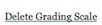
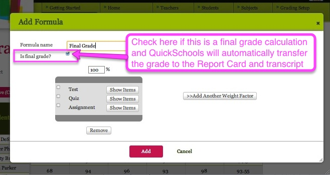
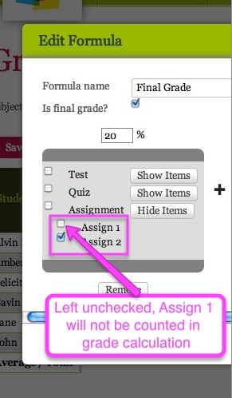
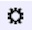

Gradebook
The Gradebook is a secure, simple and convenient way to record and track grades, allowing administrators, teachers, students
and their parents to get a quick and accurate picture of student performance in a given class.
[aris] Can Andy insert a diagram illustrating how the final grade goes to the report card, transcript, and parent portal?
A video tutorial for teachers giving an overview of the Gradebook and how to utilize its main features can be viewed in
two parts, as follows:
In this chapter, you will find detailed instructions explaining how to access the Gradebook, how to add (and delete) columns and grade entries, how to edit Gradebook settings to amend the grading scale, and how to add and edit formulas to calculate final grades.
Accessing the Gradebook
Adding Grades to the Gradebook
Editing Gradebook Settings
Calculating Grades
Accessing the Gradebook
Accessing the Gradebook is easy! Simply click on the Gradebook feature in the green border at the top of the screen.When you do so, the Gradebook page appears as follows:
[aris] Can Andy show how we would annotate/mark-up the image?

It is possible to maximize the Gradebook window by clicking on the Maximize icon () at the top right-hand corner of the page. Now you are ready to add and calculate grades!
Adding Grades to the Gradebook
Course Selection
First, select the course you wish to work on from the dropdown menu under Subject:
Enrolled students should appear in the Students column on the left-hand side of the Gradebook.
Adding Assignment Columns to the Gradebook
To add columns of assignments for grade entries, simply click on the Add Column button () or press Ctrl-A
This will bring up an Add Column popup box that looks like this:

Name the column and select a Category (such as Assignment, Quiz, or Test) for the item you are grading. It is also possible to add new categories if you would like to include different evaluation instruments in your gradebook through the Grading Setup link in the green border at the top right-hand corner of the screen. Total marks for each assignment default to 100, but may be modified to reflect different point totals for individual assignments.
Click on the red Add button () at the bottom of the box and your column will be ready to accept grade entries!
Entering Grades in the Gradebook
Enter numeric grades for each student by typing directly into the box next to the student's name. Don't forget to click the Save button () or press Ctrl-S to save your grade entries! The Gradebook will automatically calculate the letter grade according to the scale you have set using either Edit Gradebook Settings or Grade Setup, and calculate the class average grade for the assignment at the bottom of the column for easy reference:

Displaying the class average and letter grades associated with numerical grade entries can be toggled on and off using Edit Gradebook Settings, described in more detail below and accessible by clicking the Edit Gradebook Settings icon () on the Gradebook home page
Non-numeric grade entries can also be made according to the following Gradebook Code legend, which may be seen and customized by administrators through the Grading Setup link in the green bar at the top of the Gradebook home page:

This legend also appears on the Gradebook home page, directly under the columns of grade entries.
Deleting Assignment Columns from the Gradebook
To completely delete an entire column from the Gradebook, mouseover the dark green header at the top of the column you wish to remove. A small red box containing an X will appear on the right-hand side of the header, as shown below:

Clicking on this red box will permanently eliminate the column and its grades from your Gradebook.
Entering Comments about Student Performance
Comments about each student's performance on a given assignment may be added by mousing over the relevant score box for that assignment, and clicking on the comment icon () that appears in the lower right-hand corner of the scoring box for that student, as shown here:

This will bring up an Edit Comments popup box that looks like this:

The Comments box is configured to accept public comments visible to the student and his or her parents, and also private comments visible only to teachers. Enter your comments in the appropriate box and click on the red Save Comments button (
 ) to save your comments and exit the popup box.
) to save your comments and exit the popup box.
Editing Gradebook Settings
To change the grading scale and make other setting changes to the Gradebook, enter the Edit Gradebook Settings feature by clicking on this icon () in the upper right-hand corner of the Gradebook screen.
This will bring up an Edit Gradebook Settings popup box that looks like this:

Editing Display Preferences: Letter Grades and Class Averages
You may toggle the display of letter grades and class averages on (or off) by checking the appropriate boxes at the top left of the Edit Gradebook Settings screen
 ).
).With both the letter grades and class averages toggled on, the Gradebook looks like this:
whereas with only the letter grades toggled on, the bottom row of class averages would not appear:

and with only the class averages toggled on, the green rows of letter grades would be omitted:

Editing Display Preferences: Gradebook Column Order
The order in which columns appear in the Gradebook can be modified to appear by date, by column name, by category, or you can choose to manually configure their layout by selecting the appropriate choice on the Edit Gradebook Settings screen:

and then clicking on the red Save button (
). Selecting Manual control enables you to rearrange the order by dragging the columns horizontally into their desired location on the main Gradebook screen.
Creating A New Grading Scale
Some subjects may have different grading scales. For example, one subject may have 90-100 as an A, and another may have 95-100 as an A. If you need different grading scales for different courses or assignments, you can create and name unique scales by clicking on Create New Scale on the Edit Gradebook Settings popup screen.
This will bring up a New Grading Scale popup box that looks like this (here we have filled in the template with a sample scale for an Honors class):

You can name and describe the new grading scale and change the numeric values associated with each letter grade by filling in the fields with new numbers, and then clicking on the OK button (
 )
)To add rows to the grading scale (enabling plus and minus grades, for example), simply click on the Add Row button () in the New Grading Scale popup box. The new row will appear at the bottom of the scale, like this:

By re-entering values in the table and clicking on the OK button (
) now we have transformed the new row into a category for an A- grade, as shown below:
Customizing A New Grading Scale
If you want to make changes to an existing grading scale, you can also do this from the Edit Gradebook Settings screen, by first selecting the relevant grading scale from the dropdown menu
and then clicking on the Customize this scale link located just under the grade scale box:

This will bring up an Edit Grading Scale popup box that looks like this:

You can use this box to make changes to the numeric values for each grade in the scale, to add rows, or even to delete the grading scale entirely by clicking on the () link on the right-hand side of the box. Be sure to click on the red OK button (
) after making modifications to your grading scale in order to save the changes.Calculating Grades
One of the most time-saving features of the Gradebook is its ability to calculate midterm and final grades. You can set up your Gradebook for each class so that each assignment, test, quiz, or other evaluation is appropriately weighted and factors into the calcuation of each student's midterm or final grade, which can then be displayed on the Gradebook screen. For example, a subject's final grade could be made up of 50% assignments, 25% quizzes and 25% tests.
The display of both individual grade columns and calculations of midterm or final grades allows the student and his or her parents to easily see how the student is doing in the class, and also enables them to track a student's progress in the course over time. The final grade is automatically transferred to their Report Card as well.

Calculated grade columns are easily distinguished from columns of grades for individual evaluations and assignments because they have dark blue instead of green headers. The values shown in these blue columns are automatically calculated according to percentages assigned to each test, quiz, or other form of assignment or evaluation given. Final letter grades are then given based on the selected grading scale for the class.
Adding a Formula to Calculate Grades
To add a formula for grade calculation, simply click on the Add Formula button () on the main Gradebook page. This will bring up an Add Formula popup box that looks like this:

Then fill in the formula name box and check the box to indicate whether or not this is a calcuation of the final grade for the course. If so, QuickSchools will automatically transfer the calculated final grade to the student's Report Card. For final grade calculations, you can set the weight factors by percentage to reflect the values in your syllabus.
Adding Weight Factors
To add weight factors to your grading formula, click on Add Another Weight Factor (
 )
) This will add a gray weight factor box to your grading formula, as shown here:

You can add additional weight factors to the grading formula as needed, and then assign the desired percentage to each factor by checking the box next to the appropriate evaluation (e.g. test, quiz, assignment), then entering a numerical value in the percentage box above each gray weight factor box, and clicking on the Add button ()
While you may have as many weight factors as you wish in your grading formula, the percentage total of all weight factors must equal 100%, as shown in this example below utilizing three weight factors:

Deleting Weight Factors
To delete weight factors from your grading formula, click the Remove button () directly below the gray weight factor box you wish to remove. This will cause it to be permanently deleted from your grading formula.
Selection or Deselection of Specific Evaluation Instruments
To further customize the grading formula, you may choose to individually select which instruments within the evaluation categories to count in grade calculation by using the Show Items button () to reveal them and check the appropriate ones. For example, if you gave three tests but only want to count the last two, you simply check the boxes next to those items, as shown here:
Items not checked (in this case Test 1) will then not be counted in the final grade calculation.
Editing a Formula to Calculate Grades
If you have already established a formula for calculating midterm or final grades, but later want to change it, you may edit the existing formula by clicking on the link in white under its name in the blue column box of the Gradebook:
This will bring up an Edit Formula popup box that looks like this:
You can use this box to add or delete weight factors, modify percentages allotted to the existing weight factors, and/or select or deselect individual evaluation instruments using the Show Items button ().
Adding Weight Factors
To add weight factors to your grading formula, click on Add Another Weight Factor (
) This will add a gray weight factor box to your grading formula, as shown here:
After adding a new weight factor box, you must readjust the percentages so that they still total 100 with the new factor included.
Deleting Weight Factors
To delete weight factors from your grading formula, click the Remove button () directly below the gray weight factor box you wish to remove. This will cause it to be permanently deleted from your grading formula. After deleting a weight factor box, you must readjust the percentages of the remaining weight factors so that they still total 100%.
Modifying Percentages of Weight Factors
To change the percentages allotted to each weight factor in your original formula, simply enter new values in the percentage boxes directly over each weight factor. However, be sure that the percentage total of all weight factors still equals 100% after making your modifications. For example, you could edit the existing final grade formula shown above so that assignments and quizzes were weighted equally at 20%, with tests representing 60% of the final grade instead of the 50% originally selected:
Selection or Deselection of Specific Evaluation Instruments
Another option when editing the grading formula is to individually select (or deselect) instruments within the evaluation categories to count in grade calculation by using the Show Items button (). In this example, the teacher has edited the grading formula by deselecting Assign 1, which means that in the new formula, the first assignment will not be counted in grade calculation:

Don't forget that you must click on the red Update button () at the bottom center of the Edit Formula box in order for any of the above desired edits to go into effect.
Grading Setup
Administrators can easily and conveniently configure Gradebook Settings for the entire school by using the Grading Setup link in the upper right-hand portion of the green border at the top of the screen. These settings will be reflected in every teacher's Gradebook.Clicking on the Grading Setup link opens the Gradebook Settings page, a centralized location where it is possible to set up standard grading categories, grading scales, and non-numerical gradebook codes for all teachers' gradebooks in the school, as well as establish the number of decimal points to be used by the Gradebook, and how the Gradebook formula behaves or responds to missing or incomplete grades.
Grading Categories
Grading Scales
Gradebook Codes
Number of Decimal Points
Gradebook Formula Behavior
Grading Categories
The Grading Categories feature in Gradebook Settings enables administrators to identify and establish appropriate column headings for evaluation instruments teachers may select in building their Gradebook. In this example, there are three grading categories (Assignment, Quiz, and Test):Setting the Default Category
Notice that the current default category is set to "Assignment" - this means that when a teacher builds a Gradebook by adding columns of evaluation instruments, each one will automatically be listed as an Assignment unless selected otherwise via the drop-down Category menu (see Adding Assignment Columns to the Gradebook for more on how this works).
To change the default status of a category, click on the Set Default button () opposite the evaluation instrument you want to be the default. This will effect a global change on all Gradebooks school-wide, so that when teachers create new columns, the new default category will be in place. However, it will not modify existing categories in Gradebook columns already in use.
Adding a Column Category
To add a new column category to the drop-down menu available to teachers when they are setting up their Gradebook, click on the Add Column Category button ()
This will bring up an Add Gradebook Category popup box that looks like this:
Type the new category name and a brief description, if desired, in the Description field, as shown here:
Now click the OK button (
) to save the new category and make it
available to teachers in your school. The change will be reflected in the list of Grading Categories you see on your screen:Editing a Column Category
To make changes to an existing column category, select the category by mousing over the row you want to remove and clicking on it. This will bring up the Edit Gradebook Category popup box, as shown:
Now you can change the category name and description. Don't forget that you must click on the red OK button (
) at
the bottom center of the Edit Gradebook Category box in order for any of your desired edits to go into effect.Deleting a Column Category
To delete an existing column category, you must first select the category by mousing over the row you want to remove and clicking on it. This will bring up the Edit Gradebook Category popup box, as shown:
Now click on the Delete Category link () on the right-hand side of the box. A Confirm Delete popup box will immediately appear, which looks like this:
Click on the Delete button () to confirm your decision to delete the category permanently. You will note that this change does not apply retroactively, meaning that gradebooks already in use containing this category will not see it (or grades associated with it) disappear.
Configuring Display of Grading Categories Table
The display of the Grading Categories table may be set and/or customized by clicking on this icon () in the very last row in the table. This reveals the following selection menu:

As indicated, the default setting is to display 10 rows on the Grading Categories homepage; additional rows will be shown on subsequent screens. You may change this to enable viewing of 25, 50, or 100 column categories at a time. The number of rows can also be customized by selecting the Custom selection, in which case you will be prompted to fill in the desired number of rows to be made visible per page by the following popup box:

Ener the desired number of rows to display and click on the OK button
to save your preference.Finally, to restore the selection to the default, select Clear Preferences from the selection menu. This will erase any prior selection you may have made and revert to the default view of the Grading Categories table.